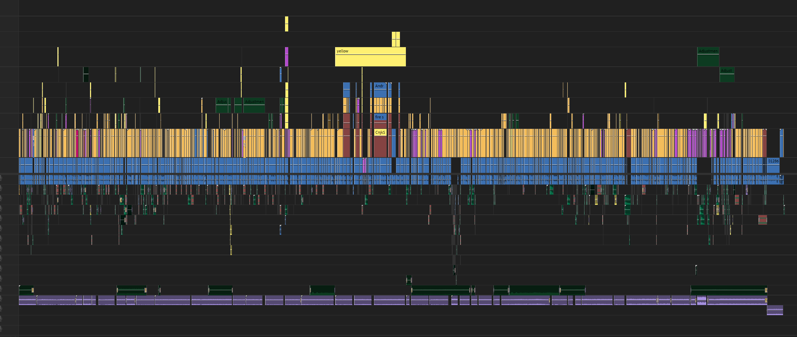

Republic Studs is a lego youtuber that makes content around recreating movies and world history in lego.
This video was an absolute blast to work on, especially with all the Muppet sound effects and music!
This wild west-themed video was a chance to get creative with sound design and atmosphere. I approached the edit like I was cutting a classic Western, think The Good, the Bad, and the Ugly. From era-specific sound effects to cinematic music choices, every edit was made to immerse the viewer in that cowboy movie experience. The pacing, transitions, and audio work all come together to tell a stylized story LEGO style.

Chicken Jockey!
A fun and educational Lego video about American history.